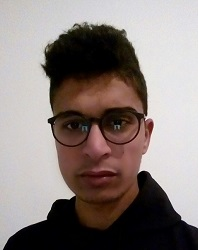

À PROPOS
Je vais vous parler de moi ...

BIO
Je m'appelle Nidhal Ammar,
je m'intéresse particulièrement à l'informatique, plus particulièrement à la développement web.
Je me considère indépendant, passionné et innovant. Grâce à mes différents projets et stages,
j'ai pu développer un esprit d'initiative ainsi qu'une autonomie
et une facilité de travail en équipe.
École Supérieure Privée d’Ingénierie et de Technologies TUNIS (ESPRIT)
Depuis septembre 2018
Développeur web [En cours]
Institut Supérieur d'Informatique et de Mathématiques de Monastir (ISIMM)
Monastir De 2013 à 2016
Diplôme de Licence Appliquée en Informatique et logiciels
Lycée Secondaire Boumerdes
Boumerdes de 2011 à 2015
Baccalauréat en Science Expérimentale